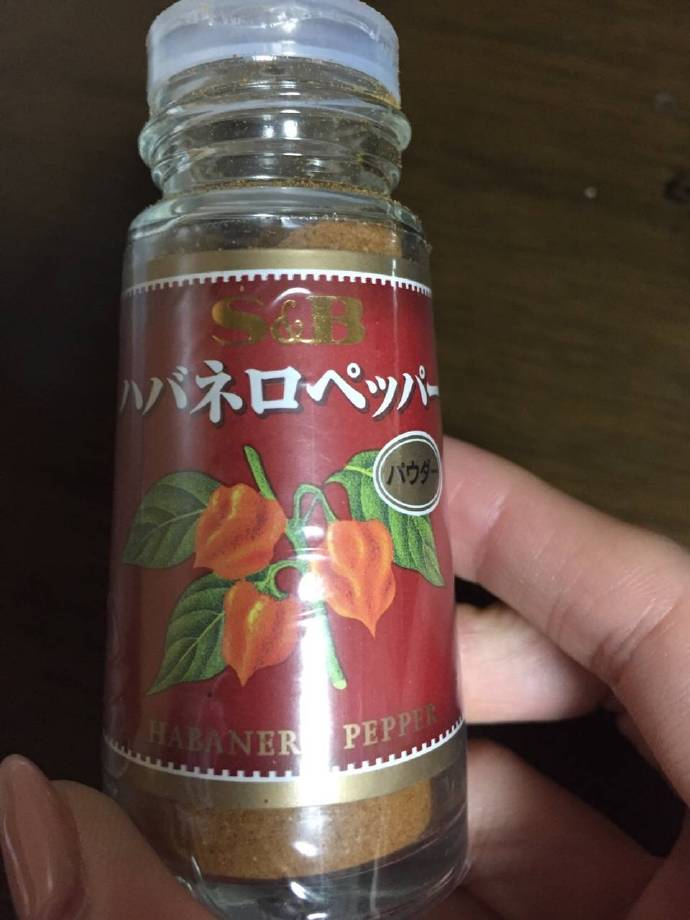
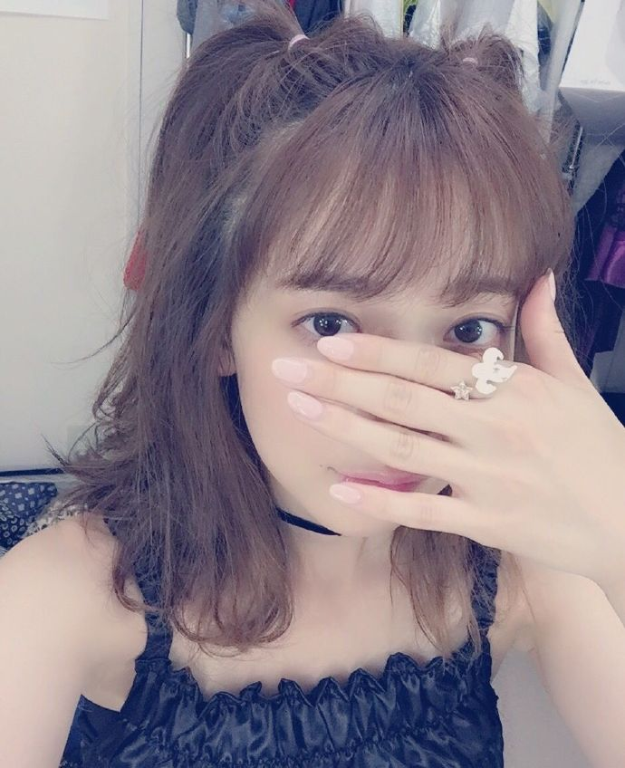

| 2016/09 30 Fri | ホットを飲むようになる季節、金木犀感 じた |
みなさん、
ライブ、しばらく出れてなくてごめんなさい。
8月の神宮前に痛めてから少しずつ良くなって今では日常生活には全く問題ないくらい動けるんです。
けど少し激しい動きをするとまだ負担がかかるみたいで、今ライブをやってもしまた痛めてしまって握手会に参加できない、となるのが週末の握手会を楽しみに足を伸ばしてきてくれる方に一番申し訳ないと思うので、今はまだライブは休ませてもらい、握手会には参加させてもらうという形にさせてもらっています。ごめんなさい。
でも大事をとって、という形なので、もうほとんど大丈夫なのです。悪化しないように、長引かないように、ここから先年末に向けてイベントやライブが増えていくことへの備え、です。みんな前回の握手会でもたくさん心配してくれてありがとうね。
でももう握手会でわたしの腰は心配しなくても大丈夫だからね！みんなが伝えたいことを伝える時間になりますように。
昨日はおうちにマイマイが来てくれたよ！
七味セットくれたの～嬉しかった～最近また辛いものブームなんだよ～！
そして今日はお仕事終わりに久々に川後のひなちゃんとご飯食べた、というかお茶した！
この2人はほんとうに定期的に会うな、定期的に時間作って会う人ってわたしにとって珍しくて、しかも2人とも女子力高いから ハッ 女の子！見習う！って思うこと多々ある...いつもありがとう...
この年齢の女の子、特にひなちゃんなんて私より何個も年下だしむしろ弟と同い年でこんなしっかりした97年生まれいるの？って感じだけど、
そんな女の子たちが自分の人生や仕事と真面目に正面から向き合ってる姿に改めてすごい世界だよなここって思う
がんばる人みんなに喜びが待っていますようにと心から思う！

これは弟が教えてくれたハバネロペッパー
辛味が足りない時にかけるの。
弟も辛いの好きなの。小さい頃辛いの苦手だった弟に食べさせて辛がってるところみるのが好きだったんだけど、もう弟も私と同じくらい辛いの好きみたい、つまんないの

今月のキャンキャン見た？
ハロウィン企画で、妖精とスペードとエイリアンなどなどになってるよヾ(｡･ω･｡) 笑

20年ぶりくらいのハーフツインも...笑
ぜひみてね！
コメント(1048)
2016/09/30 00:05